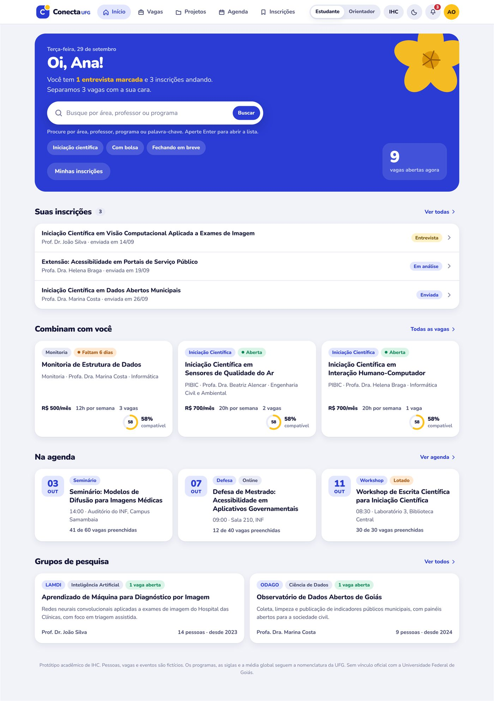

Portal de oportunidades acadêmicas para a graduação da UFG
Iniciação científica, extensão, monitoria e TCC num lugar só. O estudante vê, requisito por requisito, se é elegível e o que falta: a compatibilidade explicada.
Uma página por etapa
O documento escrito acumula as etapas num arquivo só. Estas páginas mostram a parte visual de cada uma: gráficos, telas, cores e tabelas que ficam melhores na tela do que no papel.
Pesquisa e requisitos
Ciclo em estrela, o que 13 estudantes responderam, o mapa dos canais de divulgação, requisitos rastreados, personas e cenários.
Guia de estilo e protótipo
Paleta nos dois temas com o contraste medido, tipografia Nunito, componentes funcionando, padrões de tela e as telas com e sem marcadores.
Avaliação do protótipo
Inspeção do Trilha INF, de outra equipe, com avaliação heurística, percurso cognitivo e inspeção semiótica, tela a tela.
Entrega final
O percurso pelo ciclo em estrela, os limites do que foi feito e o trabalho futuro. Está logo abaixo, nesta página.
Um protótipo em que se completa a tarefa

HTML, CSS e JavaScript num arquivo só, sem instalação: a busca busca, os filtros se combinam e a compatibilidade é calculada. Isso permite descobrir uma vaga, verificar a elegibilidade, candidatar-se e acompanhar, que é o que uma avaliação com usuários precisa observar.
O seletor Estudante / Orientador, no topo, troca o papel. O botão IHC liga os 29 marcadores que apontam cada princípio aplicado; ele vem desligado para não interferir na avaliação.
Duas voltas pelo ciclo em estrela
A primeira volta começou pela prototipação, sem dado de usuário. A avaliação daquela versão expôs o que havia sido suposto e levou de volta à análise. A segunda partiu dos requisitos e terminou na Etapa 3.
Entrou pela prototipação
A inspeção por princípios de IHC gerou a tela de confirmação e a compatibilidade explicada item a item. O confronto com os canais reais trouxe o prazo para filtro de primeira ordem.
Entrou pela especificação de requisitos
A anotação dos 29 marcadores obrigou a justificar cada decisão da interface, e a Etapa 3 exercitou as três técnicas de inspeção sobre um produto de fora.
A confirmação antes do envio e a explicação dos requisitos um a um nasceram de avaliação. Nenhuma das duas estava na hipótese com que o projeto começou.
Limites do que foi feito
Sem dado real
Pessoas, vagas e eventos são fictícios. A integração com matrícula e Lattes está especificada (RNF09), não implementada.
Sem implementação
O projeto se encerra na prototipação, como registrado no processo de design.
Inspeção sem usuários
Os métodos da Etapa 3 apontam problemas potenciais. Confirmar quais afetam usuários reais exige observação.
Recorte parcial
Das 16 telas do Trilha INF, quatro foram inspecionadas, com duas de apoio.
Coleta com docentes não fechou
O instrumento B não recebeu respostas; os requisitos derivados dele seguem provisórios.
Acessibilidade sem teste com pessoas
O verificável no artefato está feito e anotado (marcadores 10, 26, 27 e 28), mas nenhuma pessoa com deficiência usou o protótipo.
Trabalho futuro
Integração institucional
Curso, período e média global direto da base de matrícula.
Avaliação com usuários
Observação sobre as mesmas tarefas, para confirmar o que a inspeção previu.
Notificação por e-mail
Hoje o aviso de mudança de etapa só existe dentro do sistema.
Painel da coordenação
O ator secundário dos casos de uso ainda não tem tela própria.
Onde está cada coisa
| Documento completo, PF1 a PF4 | 04-PF4-Entrega-final/PF4_Conecta_UFG.docx |
| Código-fonte do protótipo | docs/index.html, arquivo único |
| Tokens de design | identidade-visual/conecta-ufg.tokens.json |
| Telas capturadas, originais | 02-PF2-Guia-de-estilo-e-prototipo/prints |
| Diagramas e questionários | 01-PF1-Projeto |
| Apresentação | 05-Apresentacao, em .pptx e .pdf |
Equipe
| Integrante | Frente de trabalho |
|---|---|
| Odiney Souza da Paixão | Prototipação e projeto de interação |
| Aline Lima Martins Coelho | Pesquisa com usuários |
| Murilo Henrique Barbosa Silva | Análise e especificação de requisitos |
| Gabriel Borges Garcia | Avaliação e representações de usuário |
| Profa. Luciana de Oliveira Berreta | Orientação |